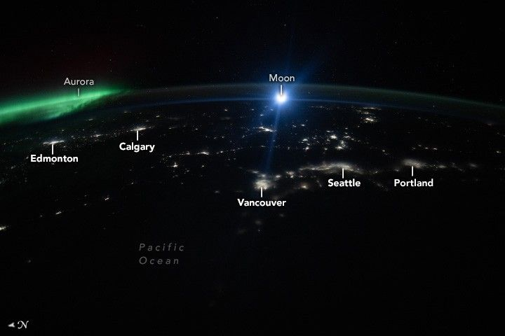

A Northwest Night Awash in Light
This image, taken by an astronaut aboard the International Space Station (ISS), shows the brilliant glow of major cities in western North America at night. The larger areas of bright yellow are lights from the U.S. cities of Portland and Seattle and the Canadian cities of Vancouver, Edmonton, and Calgary.
The bright circular feature near the center of the image is the Moon just beginning to rise above Earth’s limb. The ISS’s orbit around Earth affords astronauts this phenomenal view multiple times a day. Cruising around the planet at about 28,000 kilometers per hour (17,500 miles per hour), the crew aboard the space station sees approximately 16 moonrises and moonsets within a 24-hour period.
Inclement weather in Seattle and Vancouver likely obscured the view of the Moon for observers on the ground. Cloud coverage and light pollution can also obstruct the nighttime view of stars, the aurora, and satellites. Viewed from above, the city lights under cloud cover appear blurred compared to the lights of Edmonton and Calgary. The darkness of the Pacific Ocean and the Cascade Range contrasts with the busy illuminated landscape.
The bright green aurora is the result of charged particles from the Sun interacting with gas molecules in Earth’s upper atmosphere. This spectacular light show is often best seen near Earth’s north and south poles, where the planet’s magnetic field draws in solar particles. During strong solar storms, the aurora may be seen from lower latitudes on dark, clear nights depending on the Sun’s activity, including phenomena like solar flares and coronal mass ejections. The Sun entered the maximum phase of its current cycle in mid-2024, when auroras were observed from central Mexico. This phase is expected to continue through 2025.